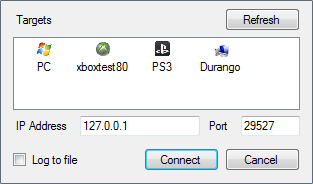
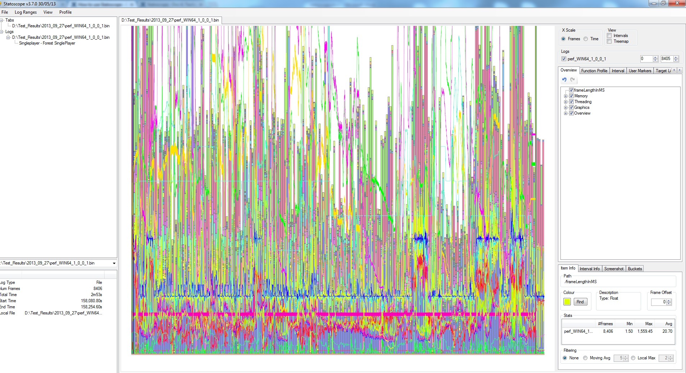

Обзор
Эта статья представляет собой краткое руководство по основам регистрации данных и использованию Statscope.
Эта страница поможет вам выполнить необходимую настройку и ознакомиться с некоторыми основами интерфейса статоскопа.
Главы:
Быстрый старт
- Запустите игру или войдите в игру из редактора.
- Установить e_StatoscopeEnabled 1, чтобы включить Статоскоп
- Установить e_StatoscopeDataGroups как вам нужно, например "фгу" вы получите длину кадра, статистику графики и пользовательские маркеры. Группы данных по умолчанию: "fgmtuO"
- Установить e_StatoscopeLogDestination чтобы:
- 1 для регистрации сокетов и выберите Файл -> Подключиться в инструменте
- 0 для регистрации файлов и перетащите файл из «статоскоп/perflog.bin» файл в инструмент
- Запустите Statscope и подключитесь к целевой платформе.
Платформы
Statscope подключится к любой консоли/платформе, которая подключена напрямую к PC или через адрес IP, указанный в диалоговом окне подключения.

Открытие журналов
Чтение из файла
Начиная с CRYENGINE версии 3.6.3 и более ранних:
Если вы выбрали e_StatoscopeLogDestination = 0 Файл сеанса хранится по адресу: BuildRoot/statscope/*.bin
Начиная с CRYENGINE 3.6.4 и более поздних версий:
Если вы выбрали e_StatoscopeLogDestination = 0 сессия файл хранится по адресу: BuildRoot/user/statscope/*.bin
Открыть логи можно разными способами:
- Перетаскивание файла журнала в окно инструмента
- Используя Файл -> Открыть журнал меню
- Подключение к запущенной игре с помощью Файл -> Подключиться
Каждый журнал открывает новую вкладку. Когда вы открываете журнал, записанный на нескольких уровнях, с включенной группой данных пользовательских маркеров («u»), каждый уровень также открывается на отдельной вкладке (это основано на маркерах начала уровня и конечного пользователя).
Щелкните средней кнопкой мыши по вкладке, чтобы закрыть ее.
По умолчанию будет отображена каждая статистика (которой обычно слишком много, чтобы быть полезной), поэтому первое, что нужно сделать, — это обрезать представление до того, что вы хотите.
Журналирование сокетов
От Файл -> Подключиться вы можете подключиться к работающей версии игры, для параметра e_StatoscopeLogDestination которой установлено значение 1.
Выберите целевую платформу, к которой вы хотите подключиться.
Если Войти в файл включен, вам будет предоставлена возможность сохранить журнал на диск для открытия позже.
Небольшое ограничение на данный момент заключается в том, что вы должны включить хотя бы одну группу данных перед подключением, но вы можете изменять группы данных на лету после подключения.
Если по какой-либо причине соединение не установлено, вы можете сбросить его, установив для e_StatoscopeLogDestination другое значение (например, 2), а затем снова вернув его на 1, а затем повторно подключившись.
Первый взгляд
После загрузки журнала или подключения к работающему приложению вы обычно увидите в Statscope следующий макет:

Этот экран соответствует виду по умолчанию со всеми включенными опциями и всем журналом, отображаемым на экране. Отсюда вы можете начать отключать ненужные вам группы данных и увеличивать изображение в интересующих областях.
Элементы управления видовым экраном
В главном окне графика:
- Щелкните левой кнопкой мыши и перетащите - панорамирование
- Щелкните правой кнопкой мыши и перетащите - масштабирование
- Щелкните правой кнопкой мыши и перетащите влево/вправо — масштабирует вид по горизонтали.
- Щелкните правой кнопкой мыши и перетащите вверх/вниз — масштабирует вид по вертикали.
- Щелкните правой кнопкой мыши и перетащите верхний правый/нижний левый - масштабируется как по горизонтали, так и по вертикали одновременно.